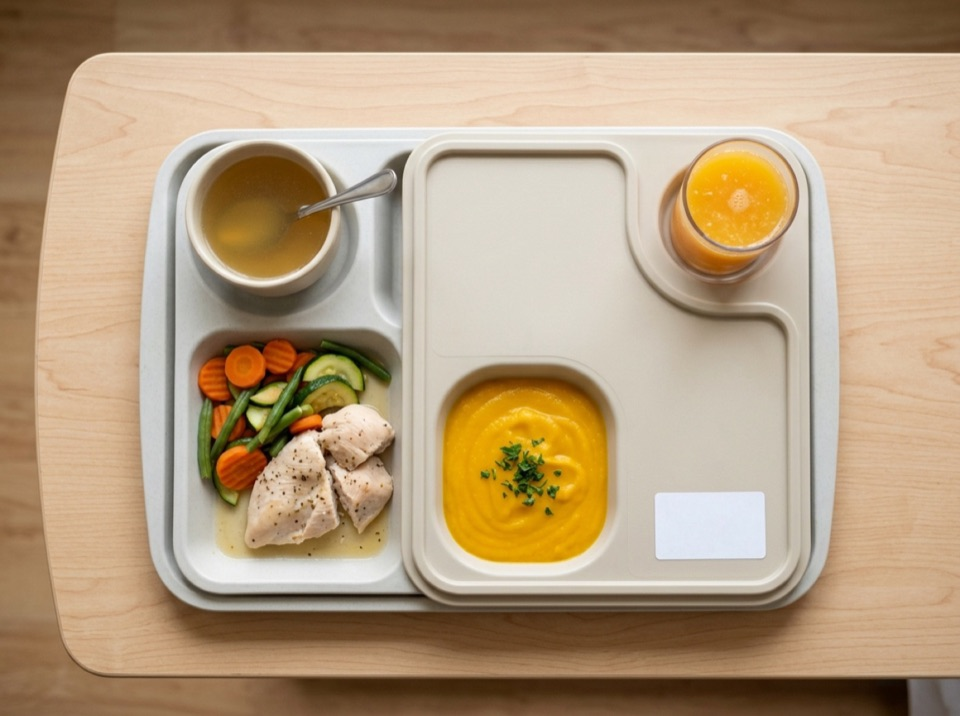

Diseñamos menús clínicos con prescripción médica rigurosa. Cada bandeja llega rotulada de forma individual con la identidad del paciente, gramajes verificados y transporte termo-aislado que asegura temperaturas seguras.
- Rotulación individual con cama, paciente, dieta y hora exacta de preparación.
- Monitoreo de temperatura en recepción (garantía de calor >65 °C o refrigeración <4 °C).
- Acompañamiento y calibración de minutas con nutricionista profesional.
Prescripciones clínicas cubiertas (toque para ver detalle):
Garantía documental: Planillas de control de lotes, fichas técnicas de gramaje y documentación sanitaria disponibles para su comité.